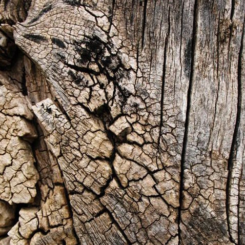

Анастасия Королькова
Человек использовал древесину на протяжении тысячелетий для многих целей, в первую очередь в качестве топлива, а также в качестве строительного материала, для изготовления инструментов, оружия, мебели, тары, произведений искусства, бумаги, жилищ. Благодаря годичным кольцам, которые в процессе роста, из-за сезонных колебаний температуры или влажности, образуют в своём стволе многие виды деревьев, изучением, поперечных оси роста деревьев, древесных спилов с помощью методов дендрохронологии, можно очень точно определить регион, где произрастало дерево, из которого было создано деревянное изделие или деталь сооружения и год его вырубки. Изучение ежегодного изменения ширин годичных колец и анализ содержания в них некоторых изотопов элементов, позволяет понять состояние климата и атмосферы в древние времена. Ценность различных пород древесины заключается в их прочности, долговечности и неповторимости рисунка. Такая древесина используется для изготовления красивой мебели, паркета, дверей, различных предметов интерьера, считающимися элитными, учитывая исходно высокую стоимость и размер усилий, затрачиваемые на её обработку. В России наиболее распространены следующие породы: дуб, вишня, бук, груша, палисандр, махагони, грецкий орех, клён (белый, сахарный, остролистный).
В случаях применения древесины в строительстве или ремесленном производстве ее называют лесом. Лесоматериалы, обычно подразделяют на мягкие и твердые. Мягкие лесоматериалы - древесина хвойных пород деревьев (ель, сосна, кедр). Они растут быстро и их специально искусственно выращивают. Мягкая древесина легко поддается распилу, сверлению и сгибанию. Она необходима в строительстве, производстве транспортировочных ящиков, бумаги и прессованной древесины. Твердая древесина производится из стволов медленно растущих пород деревьев с широкими листьями. Такая древесина гораздо труднее режется и формуется, но и почти не гниет и очень прочна. Структурный рисунок такой древесины часто бывает очень красив. Вот почему твердую древесину используют для производства дорогой изысканной мебели, музыкальные инструменты или такие специальные предметы как лодки или клюшки для крокета. Тонкой фанерой такой древесины покрывают плиты, сделанные из стружки деревьев мягких пород. Тропические деревья с твердой древесиной с каждым годом становятся все большей редкостью из-за постоянной беспощадной вырубки.